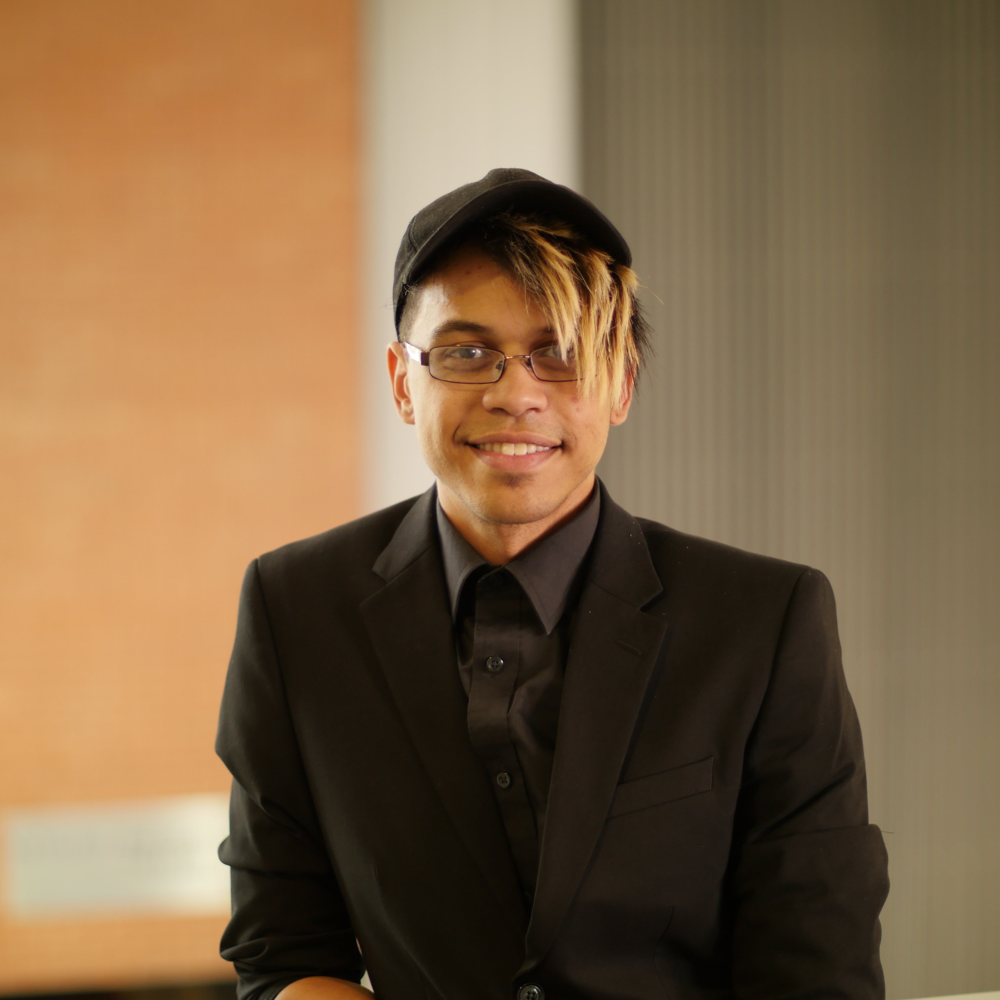

William Montero (Will)
Hey, I am (Will) I Am!
I'm a game programmer, who enjoys making games!
I enjoy to learn new things and meet new people.
Contact
Resume
GitHub
LinkedIn
Email: montero_w@live.com
Collaborated Projects
Equinox

Group project developed with three artiest and two programmers.
During the development I learned it's takes a lot to make a game,
but with a dedicated team it's possible.
This taught me that moral is important to a big porject.
How to really be a team and listen to each other.
I also learned to establish connections.
Contribution:
- Enemy AI
- Game Save
- UI Programming
- Environment Design
Click the Link for More
See more
Fridgid Peak
Group project developed with three artiest and three programmers.
Game inspired by Super Mario Bros, The climber has to climb to the top of Mountie
avoiding snow balls and collecting pick-ups to get the highest score.
This taught me that moral is important to a big porject.
How to really be a team and listen to each other.
I also learned to establish connections.
Contribution:
- UI Programming
- Game Manager and Game Save
- Interactable Pick-Ups
- Environment Design
Click the Link for More
See more


.png)